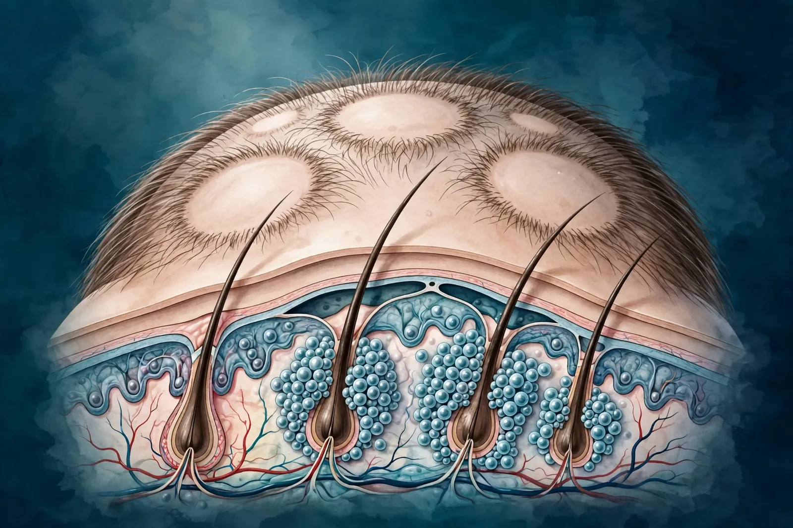

01
The follicle survives — which is why it relapses
Follicle stem cells remain, so regeneration is possible; without changing the immune environment, relapse is the rule.
Access required
This site is shared with selected partners ahead of public release. Enter your access code to view the platform and research material.
Disease brief 06 — Hair-follicle autoimmunity
That is why hair can regrow — and why it falls again. JAK inhibitors press one point in the loop, and stopping them usually reverses the gain.

AA · Follicle immune privilegeSeparate the quantities first: lifetime risk, population prevalence, hospital-based prevalence and point prevalence are different measures.
AA is not a disease of lost follicles but of lost immune privilege. One sentence explains prognosis, treatment and what happens after stopping.
Follicle stem cells remain, so regeneration is possible; without changing the immune environment, relapse is the rule.
Three oral JAK inhibitors followed; upadacitinib was approved in the EU in July 2026 and its US sNDA was filed in April 2026, with a decision discussed around May 2027.
By week 152 after withdrawal, 80% had lost the effect versus 7% continuing. JAK is suppression, not reset.
Anti-IL-7R bempikibart and the Treg expander REZPEG showed regrowth maintained or deepened after stopping in small 2026 phase 2 follow-ups — a signal, not proof.
Value is more likely to come from therapy that leaves regrowth behind after stopping than from a fourth JAK adding five points.
Before quoting “2%”, ask which 2%: lifetime risk 2%, pooled prevalence 2.11%, population-based 0.75% and point prevalence 0.1–0.2% are four different quantities.
The follicle is normally an immune sanctuary. When that fails, self-immunity targets it. JAK inhibition presses one point in the loop.
Sudden round or oval patches, exclamation-mark hairs, nail pitting and ridging. Eyebrow or eyelash loss signals severe disease.
Patchy (under 50%), totalis (AT, 100% of scalp), universalis (AU), and ophiasis (occipital/temporal band) — ophiasis has a poor prognosis.
SALT 0–100 = percentage of scalp hair loss; 0 is none, 100 is total.
Trial entry is SALT ≥50; success is SALT ≤20 (≥80% scalp coverage). Severity +1: negative psychosocial impact, eyebrow or eyelash loss, inadequate response beyond six months, diffuse positive pull test.
The JAAD 2020 “AA affects 2%” is a pooled figure pulled upward by hospital-based 3.47%. Without separating the measures, both burden and market are wrong.
Population-based 0.75% is closest to general burden; hospital-based 3.47% is the share among those who attend clinic.
1.02% before 2000 → 1.76% (2000–09) → 3.22% (after 2009). Rising ascertainment is likely; a true increase is unproven.
Adults 1.47% vs children 1.92%; AT 0.08%, ophiasis 0.02%, AU 0.03%. Severe subtypes are a small fraction — hence the “small severe pool” behind the JAK market.
NHIS 0.29% (2006) → 0.37% (2015), period and claims based. Incidence is around 0.2% per year and stable for a decade. Unlike vitiligo's 0.12% in East Asia, Korea is not low for AA.
Patchy disease improves on its own, so uncontrolled series overstate efficacy. Severe disease rarely does — which is why 0.8–6.2% placebo response in severe trials is credible.
Within 6–12 months; uncontrolled studies mistake this for treatment effect.
Upper bound in patchy follow-up — followed by relapse.
Spontaneous improvement is rare: 17.1% complete regrowth in AT/AU followed beyond 10 years (n=70).
Overall relapse about 85%, approaching 100% within 20 years in classic follow-up. In 104 patients, relapse occurred in 52% with childhood onset, 44% adult and 30% late; 79% relapsed within four years. In long-term AT/AU follow-up, ≥90% regrowth occurred in 24.2% and AU showed no improvement in 65.2%.
Quality-of-life impairment above 75%, extreme in up to a third. Anxiety or depression signs in 30–68%. A multinational severe-disease survey found anxiety 26.1%, depression 18.1%, sleep problems 28.1%, DLQI above 10 in 86.2% and significant mental or mood impact in 55.8%. Distress depends more on where hair is lost — frontal hairline, eyebrows, eyelashes — than on how much.
Korea, n=73,107 (JAMA Dermatol 2019): all-cause mortality HR 0.97 (0.87–1.09), no difference — but self-harm and psychiatric death HR 1.21 (1.04–1.41). Taiwan suicide-attempt aHR 6.28 (4.47–8.81).
Comorbidity (2025 meta-analysis): atopic dermatitis OR 2.63, autoimmune thyroiditis 1.57, IBD 1.20, SLE 3.28, vitiligo 6.61. Thyroid function and antibodies give the highest screening yield.
Treatment is a set of trade-offs by severity, extent and speed, not a single best option. The 2026 NAAF/AHRS consensus places oral JAK first-line for severe long-term disease, assuming a six-month uninterrupted trial.
| Treatment | Position | Advantage | Limit |
|---|---|---|---|
| Potent topical steroid | First line · scalp · 3–6 months | Access and cost | Slow, atrophy, limited in extensive disease |
| Intralesional triamcinolone | First line · limited patchy disease · standard for localised patches | Local efficacy | Pain, atrophy, impractical when extensive |
| DPCP / SADBE | Extensive patchy, AT/AU, chronic | A topical immunomodulatory alternative | Sensitisation, weekly visits, contact dermatitis, variable effect |
| Systemic steroid | Short course · rapidly progressive | Rapid suppression | Relapse on stopping, systemic toxicity, not long term |
| Minoxidil 5% | Adjunct | Supports regrowth | Does not stop the immune attack |
| Oral JAK inhibitor | First line · long term · severe SALT ≥50 | Strongest evidence base | Systemic safety, cost, relapse on stopping |
Adolescent BRAVE-AA-PEDS at week 36: 4 mg 42% vs 5%; 2 mg 27%.
Primary result, then later summary; placebo 1.6–2%. At three years about a third achieve complete regrowth, many sustained.
Pooled; AA2 8 mg 33.0%, 12 mg 38.3%; placebo 0.8%. FDA approved 8 mg twice daily for adults in July 2024.
30 mg 55.0% / 54.3%; 15 mg 45.2% / 44.6%; placebo 1.5% / 3.4%. SALT 0 up to 22.5%; adolescent subgroup at 30 mg up to 84.6%.
NICE TA926 (Oct 2023) did not recommend baricitinib for the NHS on cost-effectiveness grounds; TA958/TA985 (2024) recommended ritlecitinib for age 12+. Price and commercial terms decide.
BRAVE-AA1 withdrawal (JAMA 2024): after reaching SALT ≤20, switching to placebo led to 0% loss at 4 weeks, 10–11% at 8, ≥50% at 24 and ≥80% by week 152 versus 7% on continuation. Recapture on retreatment 63% (2 mg) and 85% (4 mg). Pooled JAK relapse 54% (39–69%), mostly after stopping. JAK suppresses rather than resets; the current model is continuous therapy.
The only 2026 approvals were EU upadacitinib and US adolescent expansion of baricitinib. The real news is small non-JAK durability signals — not yet proof.
| Candidate | Mechanism · stage | Data | Durability | Caution |
|---|---|---|---|---|
| Upadacitinib | JAK1 · expanding approvals | Highest SALT ≤20 among JAKs at 55% | Requires continuous therapy | Cross-trial comparisons are confounded |
| Bempikibart (Q32) | Anti-IL-7Rα, blocking IL-7 and TSLP · phase 2a SIGNAL-AA Part B | n=33 severe or very severe; mean SALT reduction 35.3% at week 36; SALT ≤20 in 40.0% mITT and 30.3% ITT | Most maintained or improved 16 weeks after stopping | Small, open-label, no placebo; registrational intent 1H 2027; Fast Track |
| REZPEG · Nektar | IL-2R agonist, Treg expansion · phase 2b REZOLVE-AA | Phase 3 starts Dec 2026; data 2029; 52-week efficacy described by the company as at baricitinib benchmark level | Of 8 reaching SALT ≤20, 6 maintained at 4 months and 5 (63%) at 6 months; 29–31% newly reached in extension | Very small post-stop sample; Fast Track July 2025 |
| FB102 | Anti-CD122 · phase 1b/2 | Positive phase 2 in celiac disease (Oct 2026) | Durability hypothesis in AA | AA data awaited |
| Ritlecitinib 100 mg | ALLEGRO-100, n=674 | Completion expected March 2028 | — | High-dose validation; SALT alone will not differentiate |
| Ivarimacitinib | JAK1 · phase 2/3 in China and globally | — | — | Crowded; differentiation must come from safety or durability |
| Dupilumab | Case series · exploratory | — | — | An option with atopic comorbidity; not first line |
Honest summary
Do not add the $3.5–4.3B global figure and the $380–850M 7MM figure. The first covers all AA care and, in some scopes, wigs and support; the second is drugs in seven markets only.
2025 → 2033 · CAGR 8.3%
2034 · CAGR 8.81%
2035 · CAGR 9.3%
2024 → 2034 · CAGR 12.4%
CAGR 18.5% → 2034
CAGR 21.2%
CAGR 24.4% · 2022–36
The opportunity is real — but it lies in a defined severe pool, a measurable SALT endpoint and a durable therapy, not in “all hair loss”.
Epidemiology follows AA meta-analyses and Korean NHIS data; clinical figures come from phase 3 disclosures and withdrawal trials; market figures from research firms and company reporting. Efficacy values are within-trial, not cross-trial comparisons.
This page is a research summary for general information, not medical advice. Market figures vary widely with definition and source; verify primary material before investment or IR use. Efficacy figures are within-trial results.
The Nextab, Inc. Th1 programme is preclinical; this brief does not claim validity of the programme in this indication.